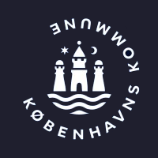

Data Consultant — Københavns Kommune, Socialforvaltningen
I work across the full chain from source systems to decision support — building data solutions used daily by leadership and colleagues in the Social Services department.
- Built a Power BI solution on SAP data that replaced a manual Microsoft Access workflow with self-service transaction lookup.
- Migrated our invoice overview from Excel to Power BI with user-level filtering and dedicated views for pending cases.
- Designed a cross-system control matching payments against grant end dates across three systems without shared keys — built on my own mapping of fact/dimension tables and custom matching logic.
- Implemented deep links from Power BI directly into SAP and our case management system to speed up investigations.
The work involves handling sensitive personal data every day, so data quality and GDPR-aware processing are built into everything I deliver.
